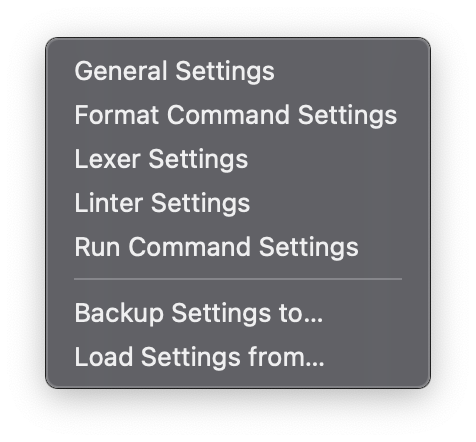

| Name | Function | ||||||
|---|---|---|---|---|---|---|---|
| About PyPlus | Shows the about information. | ||||||
| Preferences |
|
||||||
| Exit Editor | Quits the editor. | ||||||
| Restart app | When you want to apply settings, use this option. | ||||||
| Check for updates | Downloads ver.json and checks for updates. |
This editor uses JSON to keep settings, for editing guides, see the comments.